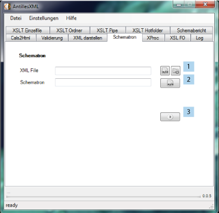

Hier wird die Möglichkeit gegeben, bestehende XML Dateien gegen Schematronfiles zu validieren.
Die entsprechenden Ausgaben werden in einem Log dargestellt. Dieses Feature ist auch ordnerweise
möglich.

Zunächst muss die XML Datei oder ein Ordner angegeben werden (1). Nun das Schematron Schema (2) um dann die Überprüfung zu starten (3).